Igre
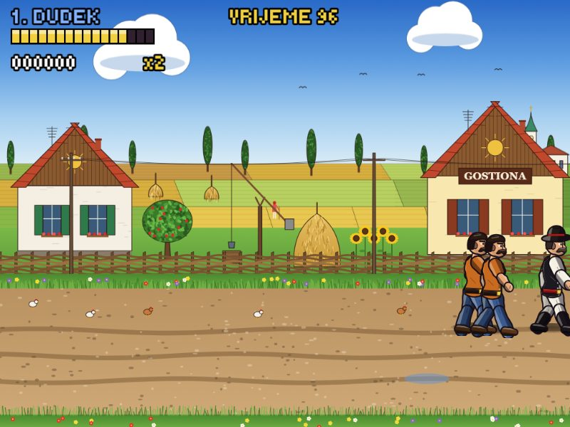
Dupli Zmaj IIosveta Gruntovčana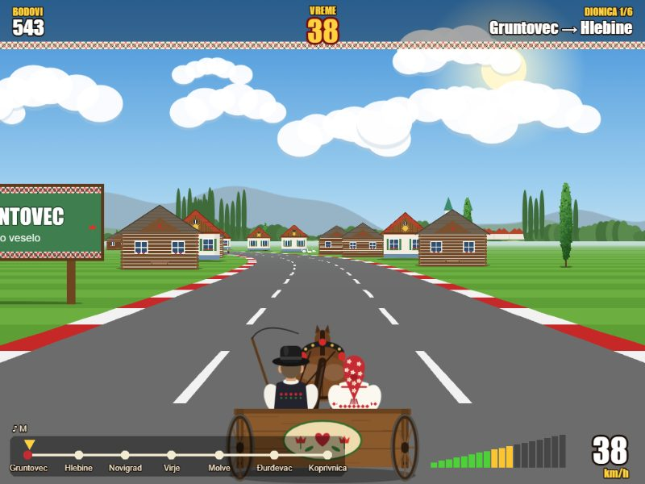
Gruntovec Runs kolima do Koprivnice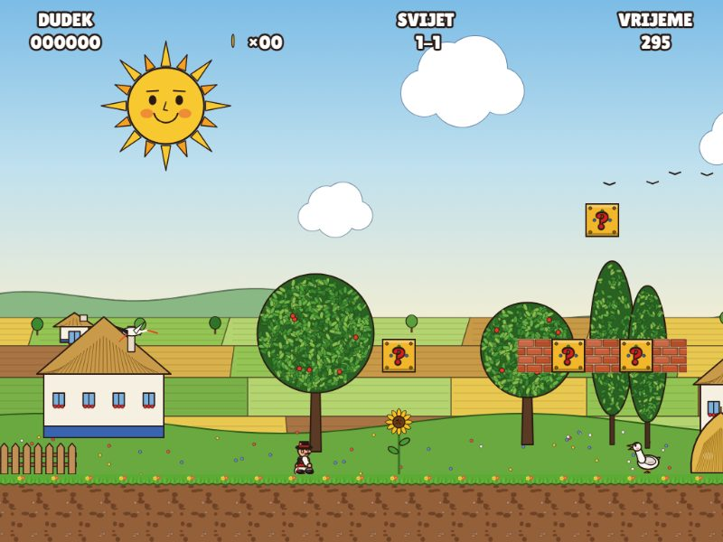
Super DražDudek spašava Regicu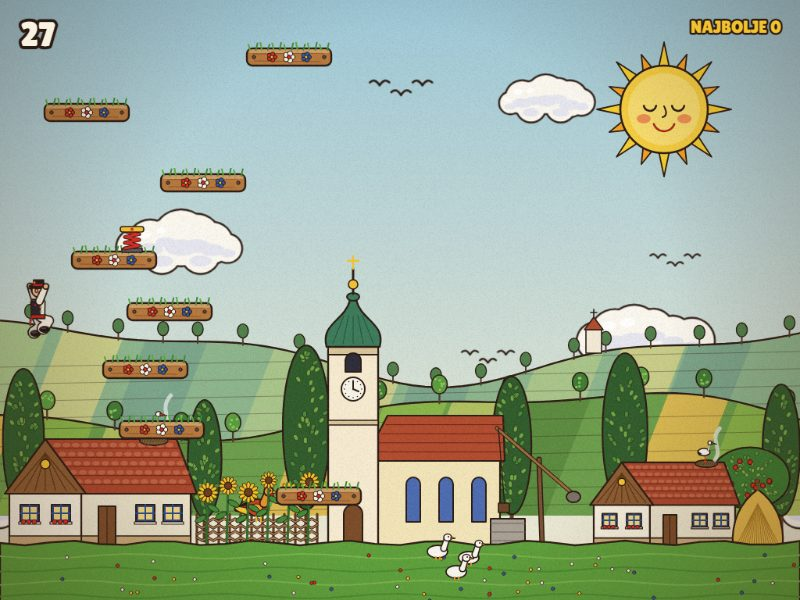
Dudek do nebaskoči što više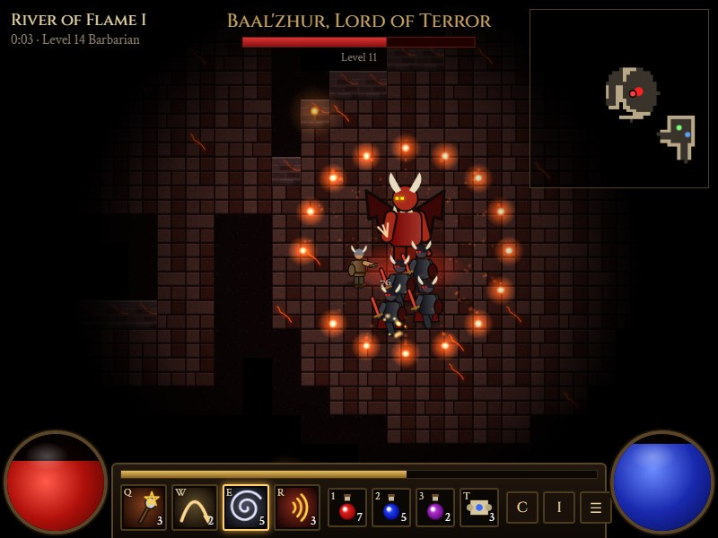
Infernal Descentdolje do Gospodara Užasa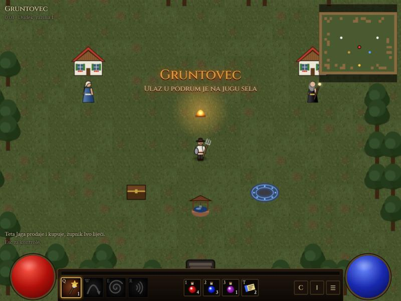
Dudekov Pakeldolje do Crnog Dudeka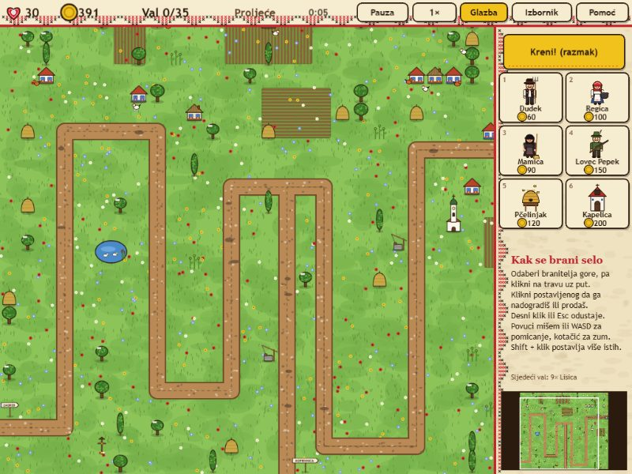
Obrana Gruntovcabranimo selo od lisica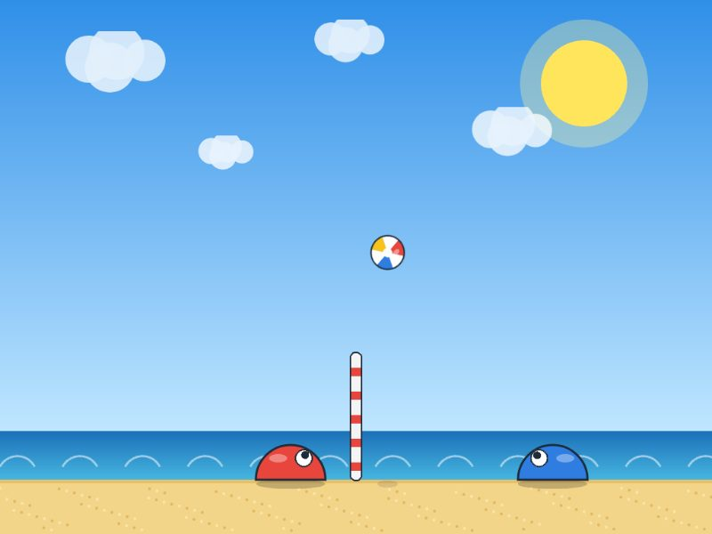
Bubble Volleyodbojka na pijesku, i online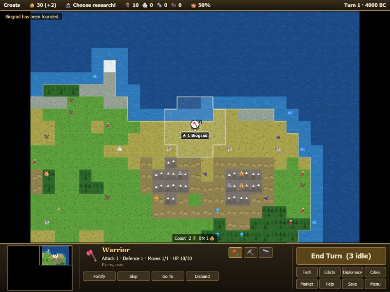
Civilizationod sela do carstva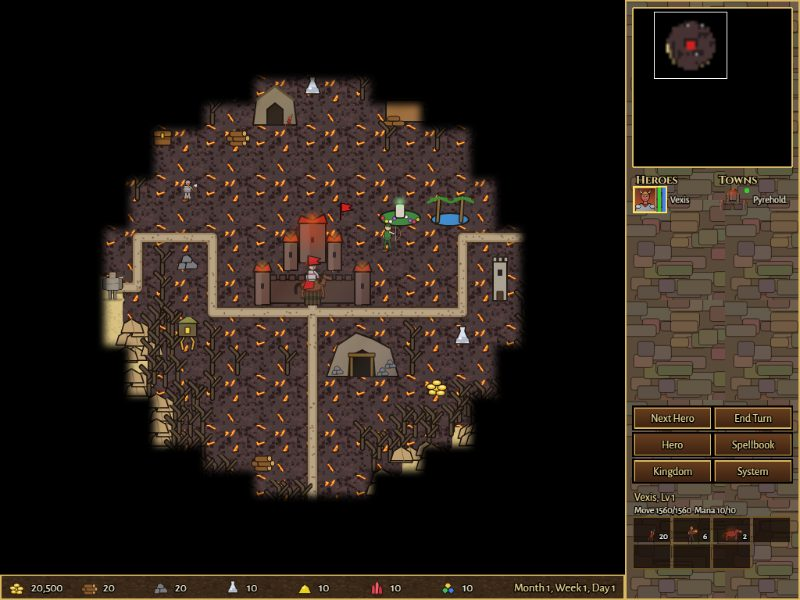
Heroes of the Realmjunaci, dvorci i zmajevi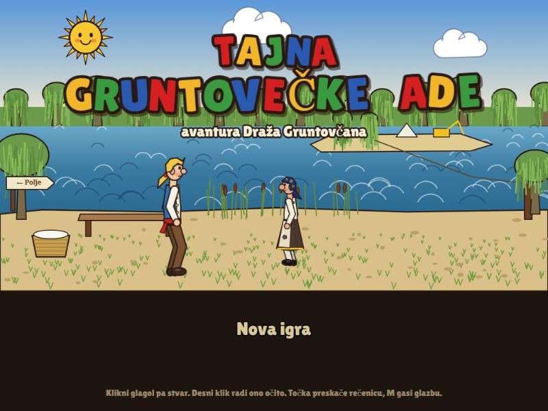
Tajna Gruntovečke AdeDraž hoće biti pravi Gruntovčan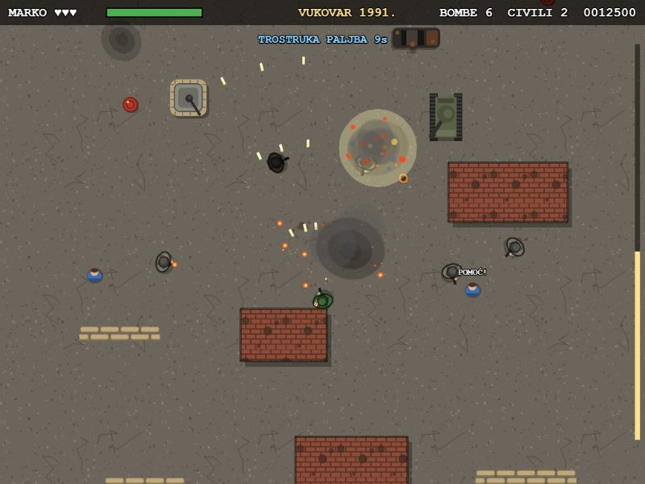
CommandoMarko u Domovinskom ratu